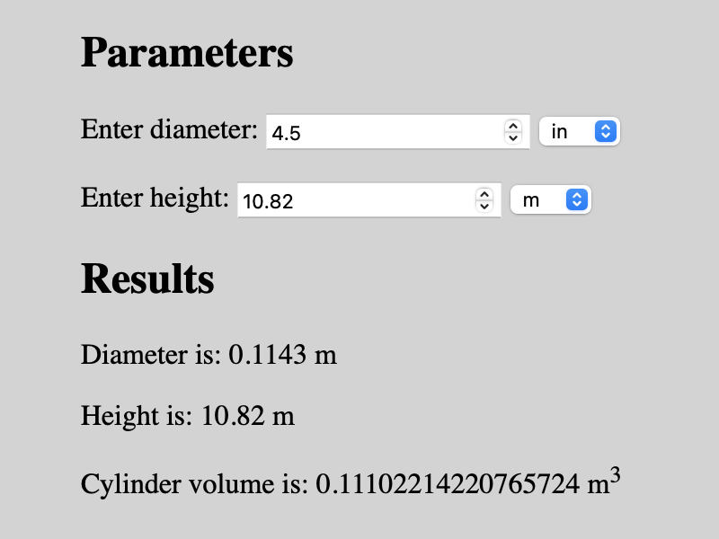

In this example, the select element is used to change the units associated with the input parameter. As shown in the image below, the diameter is entered as 4.5 inches and is automatically converted to meters as shown in the Results section. The same conversion to meters is done for the height parameter. Finally, the parameters (in units of meters) are used to calculate the cylinder volume in cubic meters (m3).

<!-- index.html -->
<!DOCTYPE html>
<html>
<head>
<meta charset="utf-8">
<meta name="viewport" content="width=device-width, initial-scale=1">
<title>Example</title>
</head>
<style>
body {
background-color: lightgrey;
margin: 40px auto;
max-width: 800px;
}
</style>
<body>
<h2>Parameters</h2>
<div>
<label for="diameter">Enter diameter:</label>
<input type="number" id="diameter" name="diameter" min="0" value="4.5">
<select id="diameterUnits">
<option value="centimeter">cm</option>
<option value="inch" selected>in</option>
<option value="meter">m</option>
</select>
</div>
<br>
<div>
<label for="height">Enter height:</label>
<input type="number" id="height" name="height" min="0" value="10.82">
<select id="heightUnits">
<option value="centimeter">cm</option>
<option value="inch">in</option>
<option value="meter" selected>m</option>
</select>
</div>
<h2>Results</h2>
<p id="diameterResult">Diameter is:</p>
<p id="heightResult">Height is:</p>
<p id="volumeResult">Cylinder volume is:</p>
<script src="app.js"></script>
</body>
</html>
The JavaScript file used for this example is shown below.
// app.js
function calcVolume(diameter, height) {
const radius = diameter / 2;
const vol = (Math.PI * radius * radius) * height;
return vol;
}
function convert(value, units) {
let factor;
switch (units) {
case "centimeter":
factor = 0.01;
break;
case "inch":
factor = 0.0254;
break;
default:
factor = 1;
break;
}
return value * factor
}
function update() {
// Get parameter values
let diameter = document.getElementById("diameter").value;
let height = document.getElementById("height").value;
// Get unit values
const diamUnits = document.getElementById("diameterUnits").value;
const htUnits = document.getElementById("heightUnits").value;
// Convert parameter values to units of meter
diameter = convert(diameter, diamUnits);
height = convert(height, htUnits);
// Set results
const diamResult = document.getElementById("diameterResult");
diamResult.innerHTML = "Diameter is: " + diameter + " m";
const htResult = document.getElementById("heightResult");
htResult.innerHTML = "Height is: " + height + " m";
const volume = calcVolume(diameter, height);
const volResult = document.getElementById("volumeResult");
volResult.innerHTML = "Cylinder volume is: " + volume + " m<sup>3</sup>";
}
window.addEventListener('load', update);
document.addEventListener("input", update);
Gavin Wiggins © 2025
Made on a Mac with Genja. Hosted on GitHub Pages.